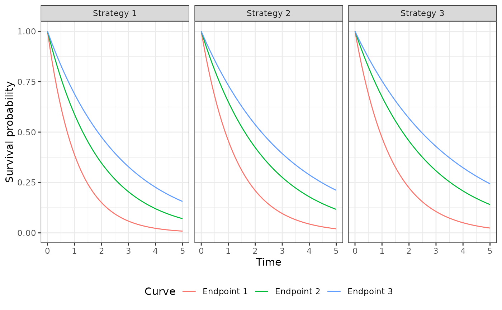
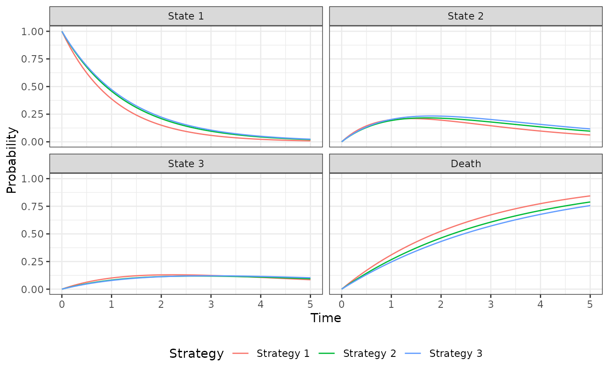

Simulate outcomes from an N-state partitioned survival model.
An R6::R6Class object.
Incerti and Jansen (2021). See Section 2.3 for a mathematical description of a PSM and Section 4.2 for an example in oncology. The mathematical approach used to simulate costs and QALYs from state probabilities is described in Section 2.1.
The PsmCurves documentation
describes the class for the survival models and the StateVals documentation
describes the class for the cost and utility models. A PsmCurves
object is typically created using create_PsmCurves().
The PsmCurves documentation provides an example in which the model
is parameterized from parameter objects (i.e., without having the patient-level
data required to fit a model with R). A longer example is provided in
vignette("psm").
survival_modelsThe survival models used to predict survival curves. Must be
an object of class PsmCurves.
utility_modelThe model for health state utility. Must be an object of
class StateVals.
cost_modelsThe models used to predict costs by health state.
Must be a list of objects of class StateVals, where each element of the
list represents a different cost category.
n_statesNumber of states in the partitioned survival model.
t_A numeric vector of times at which survival curves were predicted. Determined
by the argument t in $sim_curves().
survival_An object of class survival simulated using sim_survival().
stateprobs_An object of class stateprobs simulated using $sim_stateprobs().
qalys_An object of class qalys simulated using $sim_qalys().
costs_An object of class costs simulated using $sim_costs().
new()Create a new Psm object.
Psm$new(survival_models = NULL, utility_model = NULL, cost_models = NULL)sim_stateprobs()Simulate health state probabilities from survival_ using a partitioned
survival analysis.
An instance of self with simulated output of class stateprobs
stored in stateprobs_.
sim_qalys()Simulate quality-adjusted life-years (QALYs) as a function of stateprobs_ and
utility_model. See sim_qalys() for details.
Psm$sim_qalys(
dr = 0.03,
integrate_method = c("trapz", "riemann_left", "riemann_right"),
lys = TRUE
)drDiscount rate.
integrate_methodMethod used to integrate state values when computing
costs or QALYs. Options are trapz for the trapezoid rule,
riemann_left for a left Riemann sum, and
riemann_right for a right Riemann sum.
lysIf TRUE, then life-years are simulated in addition to QALYs.
An instance of self with simulated output of class qalys stored
in qalys_.
sim_costs()Simulate costs as a function of stateprobs_ and cost_models.
See sim_costs() for details.
Psm$sim_costs(
dr = 0.03,
integrate_method = c("trapz", "riemann_left", "riemann_right")
)drDiscount rate.
integrate_methodMethod used to integrate state values when computing
costs or QALYs. Options are trapz for the trapezoid rule,
riemann_left for a left Riemann sum, and
riemann_right for a right Riemann sum.
An instance of self with simulated output of class costs stored
in costs_.
summarize()Summarize costs and QALYs so that cost-effectiveness analysis can be performed.
See summarize_ce().
library("flexsurv")
library("ggplot2")
theme_set(theme_bw())
# Model setup
strategies <- data.frame(strategy_id = c(1, 2, 3),
strategy_name = paste0("Strategy ", 1:3))
patients <- data.frame(patient_id = seq(1, 3),
age = c(45, 50, 60),
female = c(0, 0, 1))
states <- data.frame(state_id = seq(1, 3),
state_name = paste0("State ", seq(1, 3)))
hesim_dat <- hesim_data(strategies = strategies,
patients = patients,
states = states)
labs <- c(
get_labels(hesim_dat),
list(curve = c("Endpoint 1" = 1,
"Endpoint 2" = 2,
"Endpoint 3" = 3))
)
n_samples <- 2
# Survival models
surv_est_data <- psm4_exdata$survival
fit1 <- flexsurvreg(Surv(endpoint1_time, endpoint1_status) ~ factor(strategy_id),
data = surv_est_data, dist = "exp")
fit2 <- flexsurvreg(Surv(endpoint2_time, endpoint2_status) ~ factor(strategy_id),
data = surv_est_data, dist = "exp")
fit3 <- flexsurvreg(Surv(endpoint3_time, endpoint3_status) ~ factor(strategy_id),
data = surv_est_data, dist = "exp")
fits <- flexsurvreg_list(fit1, fit2, fit3)
surv_input_data <- expand(hesim_dat, by = c("strategies", "patients"))
psm_curves <- create_PsmCurves(fits, input_data = surv_input_data,
uncertainty = "bootstrap", est_data = surv_est_data,
n = n_samples)
# Cost model(s)
cost_input_data <- expand(hesim_dat, by = c("strategies", "patients", "states"))
fit_costs_medical <- lm(costs ~ female + state_name,
data = psm4_exdata$costs$medical)
psm_costs_medical <- create_StateVals(fit_costs_medical,
input_data = cost_input_data,
n = n_samples)
# Utility model
utility_tbl <- stateval_tbl(tbl = data.frame(state_id = states$state_id,
min = psm4_exdata$utility$lower,
max = psm4_exdata$utility$upper),
dist = "unif")
psm_utility <- create_StateVals(utility_tbl, n = n_samples,
hesim_data = hesim_dat)
# Partitioned survival decision model
psm <- Psm$new(survival_models = psm_curves,
utility_model = psm_utility,
cost_models = list(medical = psm_costs_medical))
psm$sim_survival(t = seq(0, 5, 1/12))
autoplot(psm$survival_, labels = labs, ci = FALSE, ci_style = "ribbon")

psm$sim_stateprobs()
autoplot(psm$stateprobs_, labels = labs)

psm$sim_costs(dr = .03)
head(psm$costs_)
#> sample strategy_id patient_id grp_id state_id dr category costs
#> 1: 1 1 1 1 1 0.03 medical 32040.82
#> 2: 1 1 1 1 2 0.03 medical 17241.33
#> 3: 1 1 1 1 3 0.03 medical 17165.95
#> 4: 1 1 2 1 1 0.03 medical 32040.82
#> 5: 1 1 2 1 2 0.03 medical 17241.33
#> 6: 1 1 2 1 3 0.03 medical 17165.95
head(psm$sim_qalys(dr = .03)$qalys_)
#> sample strategy_id patient_id grp_id state_id dr qalys lys
#> 1: 1 1 1 1 1 0.03 0.8759927 1.0170828
#> 2: 1 1 1 1 2 0.03 0.4895583 0.6482033
#> 3: 1 1 1 1 3 0.03 0.3468770 0.5055821
#> 4: 1 1 2 1 1 0.03 0.8759927 1.0170828
#> 5: 1 1 2 1 2 0.03 0.4895583 0.6482033
#> 6: 1 1 2 1 3 0.03 0.3468770 0.5055821